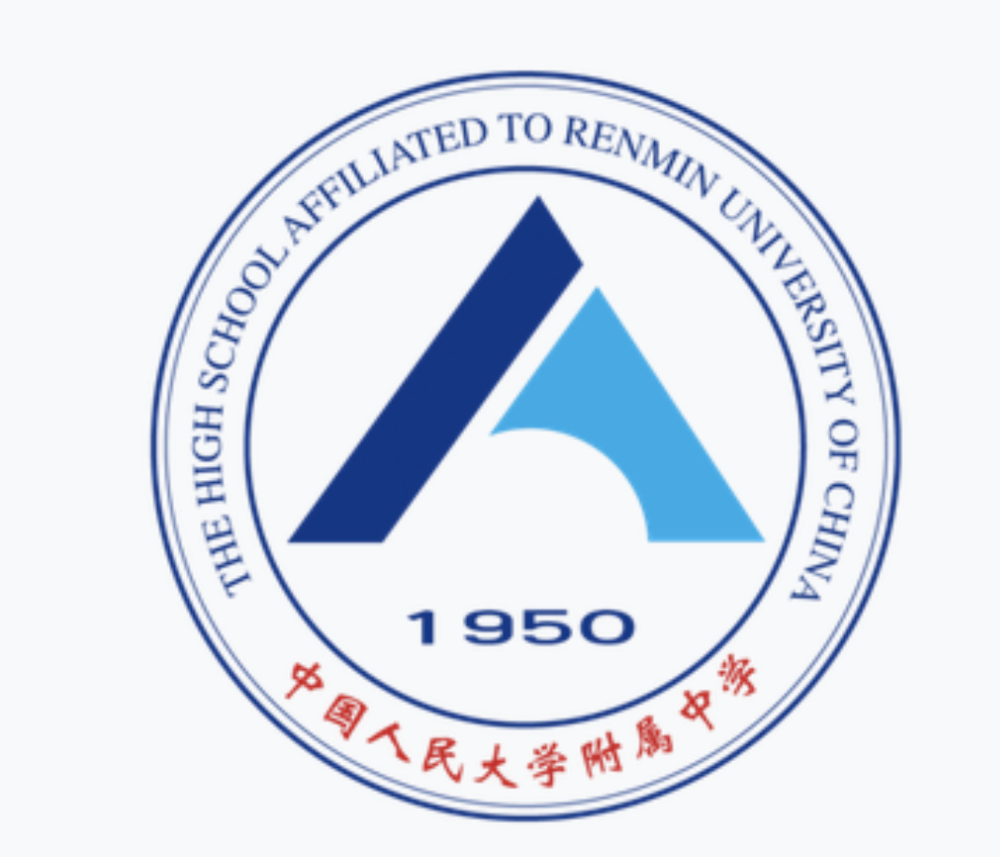

<!-- Education Section -->
<section id="education">
    <div class="container">
      <div class="row">
        <div class="col-lg-12 text-center">
          <h2 class="section-heading">Education</h2>
          <h3 class="section-subheading text-muted"></h3>
        </div>
      </div>
      <div class="row">
        <div class="col-lg-12">
          <ul class="timeline">
            <!-- WUSTL M.S. -->
            <li>
                <div class="timeline-image">
                  
                </div>
                <div class="timeline-panel">
                  <div class="timeline-heading">
                    <h4>Washington University in St. Louis</h4>
                    <h4 class="subheading">
                      Master of Science (M.S.) Aug 2022&#8211;Present
                    </h4>
                  </div>
                  <div class="timeline-body">
                      <p class="text-muted job-right">
                        Major in Engineering in Data Analytics and Statistics
                      </p>
                      <p class="text-muted">
                        GPA: 4.0 / 4.0
                      </p>
                      <p class="text-muted">Significant courses include:</p>
                      <ul class="text-muted">
                          <li>Data Warehouse</li>
                          <li>Airflow</li>
                          <li>Database management</li>
                          <li>Data Mining</li>
                          <li>Big Data</li>
                          <li>Data Modeling</li>
                          <li>Data Structure</li>
                      </ul>
                  </div>
                </div>
              </li>
  

            <!-- UNC B.S. -->
            <li class="timeline-inverted">
              <div class="timeline-image">
                
              </div>
              <div class="timeline-panel">
                <div class="timeline-heading">
                  <h4>University of North Carolina at Chapel Hill</h4>
                  <h4 class="subheading">
                    Bachelor of Science (B.S.) Aug 2018&#8211;Dec 2021
                  </h4>
                </div>
                <div class="timeline-body">
                    <p class="text-muted job-right">
                      Major in Computer Science and Mathematics, Minor in statistics
                    </p>
                    <p class="text-muted">
                        GPA: 4.0 / 4.0
                      </p>
                    <p class="text-muted">Significant courses include:</p>
                    <ul class="text-muted">
                        <li>Machine Learning</li>
                        <li>Big Data and Cloud Computing</li>
                        <li>Artificial Intelligence</li>
                        <li>Data Warehouse</li>
                        <li>Scalable Analysis (PySpark, Hadoop)</li>
                    </ul>
                </div>
              </div>
            </li>

            <!-- RDFZ High School -->
            <li>
                <div class="timeline-image">
                  
                </div>
                <div class="timeline-panel">
                  <div class="timeline-heading">
                    <h4>High School Affiliated to Renmin Univerisy of China</h4>
                    <h4 class="subheading">
                        Sep 2015&#8211;May 2018
                    </h4>
                  </div>
                  <div class="timeline-body">
                      <p class="text-muted">
                        Mathematical Modeling:
                        </p>
                        <ul class="text-muted">
                            <li>Won Prize: Honorable Mention Prize in MCM (2020), Finalist Prize in IMMC (2017) international and regional, invited to defend the thesis o Meritorious Prize in HIMCM (2016)</li>
                            <li>Team Leader in competitions, led three students</li>
                            <li>Teaching assistant of mathematical modeling course in high school, assisted teacher to prepare class materials and teach junior students mathematical modeling knowledge</li>
                            <li>Like & Subscribe (2020): analyzed the customer reviews of three products in Amazon using machine learning and time series</li>
                            <li>Time Lag (2017): calculated the earth’s shape and the best rote for artificial satellite using sphere and physics theorems</li>
                        </ul>
                  </div>
                </div>
              </li>
